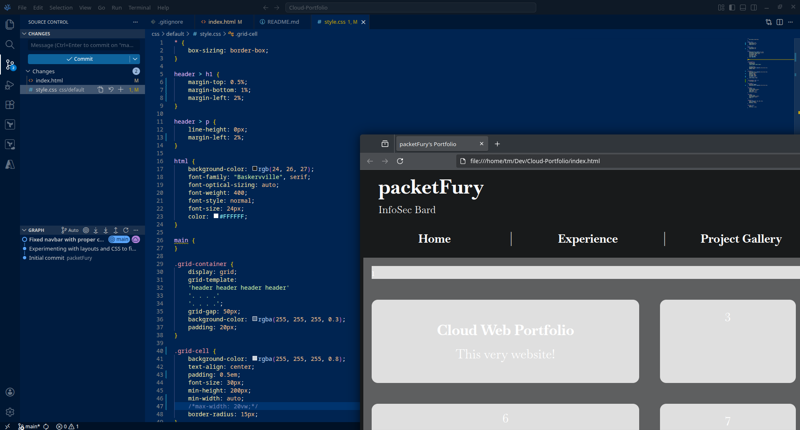
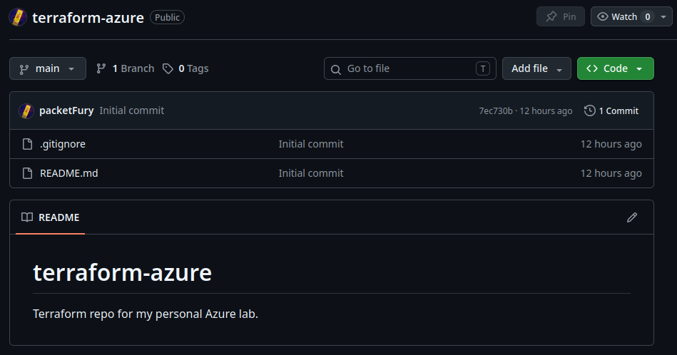
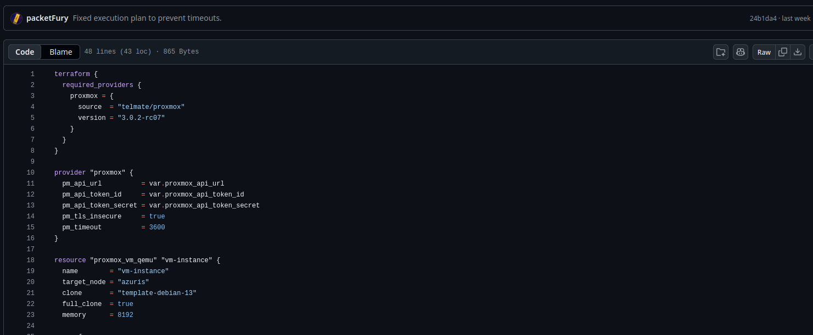
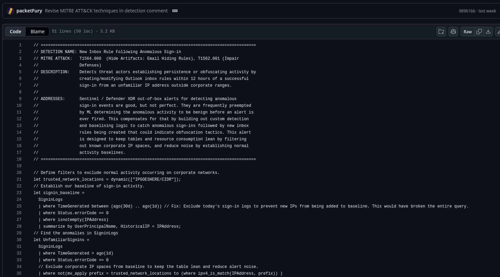

Cloud Web Portfolio
This very website! Comes in Azure and AWS flavors.

Terraform - Azure
The Terraform repo for my Azure labs.

Terraform - Onprem
The Terraform repo for my on-premises Proxmox Lab.

KQL Toolbox
Common KQL queries and alerts to track specific IoAs.